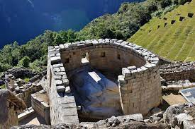
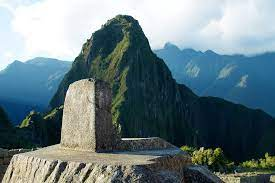

161. City of Machu Picchu. Central Highlands, Peru. Inka. c. 1450- 1540 CE Granite.
Form
Buildings built of stone with perfectly carved rock rendered in precise shapes and grooved together; thatched roofs
Outward faces of the stones were smoothed and grooved
Two hundred buildings, mostly houses; some temples, palaces, and baths, and even astronomical observatory; most in a basic trapezoidal shape
Entryways and windows are trapezoidal
People farmed on terraces
Function
Originally functioned as a royal retreat
The estate of fifteenth-century Inkan rulers
So remote that it was probably not used for administrative purposes in the Inkan world
Peaceful center: many bones were uncovered, but none of the indicate war-like behavior

Observatory
Form
Ashlar masonry
Highest point at Machu Picchu
Function
Used to chart the sun’s movements; also known as the Temple of the Sun
Left Window: sun shines through on the morning of the winter solstice.
Right window: sun shines through on the morning of the summer solstice
Devoted to the sun god

Intihuatana Stone
Intihuatana means “Hitching post of the sun”; aligns with the sun at the spring and the autumn equinoxes, when the sun stands directly over the pillar and thus creates no shadow